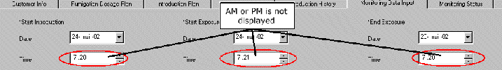
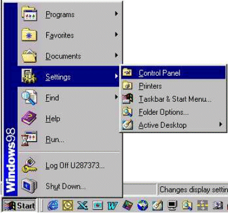
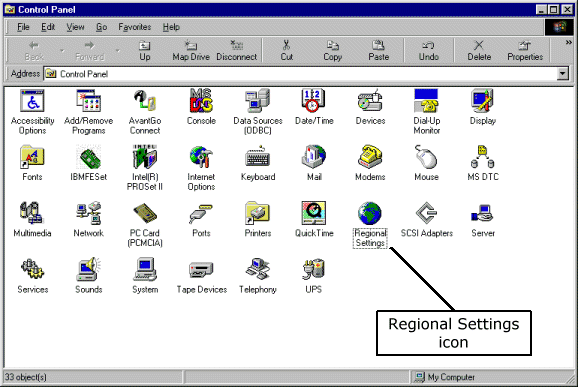
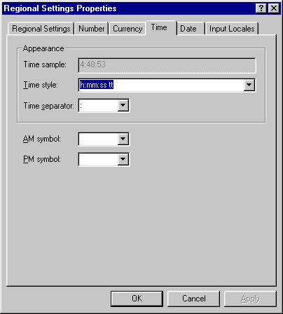
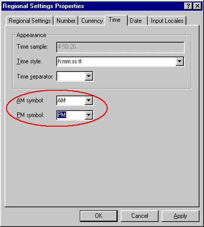

How to Change Region Settings to Display Time Correctly
Depending on settings in the Microsoft Windows operating software Control Panel, the files which display time may not show the time correctly. In the screenshot below, notice that the time fields do not display am or pm.

To fix this, you need to change the time display settings. Click on the Start button and select Settings and Control Panel.

Within Control Panel, double click on the Regional Settings icon.

Next, go to the Time tab within the Display Properties.

Select AM for the AM symbol and PM for the PM symbol.

Click on OK to save the settings.
You should see the AM/PM the next time you run the Fumiguide.